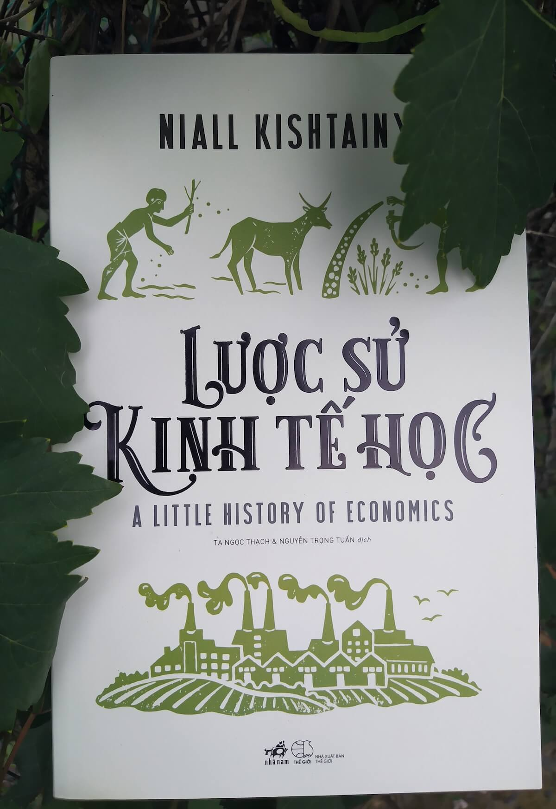

HÀI HƯỚC

Khi nào cướp nhà băng
Cuốn sách Khi nào cướp nhà băng là cuốn sách mới nhất trong series Kinh tế học
hài hước nổi tiếng của 2 tác giả Steve D. Levitt và Stephen J. Dubner. Với tựa đề sách khá tò
mò, những trích dẫn khá hài hước như tại sao giá xăng tăng lại đáng mừng hơn đáng lo, tại sao
gian lận và doping lại tốt cho thể thao và tốt ở khía cạnh nào…và không thể không kể đến giọng
văn lạ lùng, lan man rời rạc nhưng khá thâm thúy đầy nét quen thuộc của các tác giả

Chó xanh lông dài
“Chó xanh lông vàng” không kịch tính, cũng không chứa đựng quá nhiều bất ngờ,
Hwang Sun-mi cứ bình bình đạm đạm kể qua hết chương này đến chương khác, có sinh ra có chết đi,
từ gặp gỡ đến ly biệt… những câu chuyện thường nhật của con người và loài vật. Tác phẩm, một
cách chậm rãi và sâu lắng, diễn dịch niềm vui và nỗi buồn của cuộc đời, theo một cách rất riêng.

Nỗi đau của chàng Werther
Nỗi đau của chàng Werther – tác phẩm được viết khi tuổi đời và tuổi nghề của
đại văn hào người Đức Johann Wolfgang von Goethe còn rất trẻ – là bản trần tình dưới dạng thư
tín của chàng thanh niên bị những cuồng phong của thời cuộc và tình ái làm cho thương tổn đến
tận cùng, và cái chết là lựa chọn khả dĩ duy nhất để chàng thoát ra khỏi tình trạng bế tắc đầy
tuyệt vọng. Một số phận như thế không chỉ làm những tâm hồn độc giả trẻ trung khi ấy thổn thức
vì thương cảm, mà còn nhận được sự đồng cảm trong từng chiều kích và khía cạnh của nỗi đau mà
chàng trai ấy trải qua.

Khi loài vật lên ngôi
Đó là lời tựa tiểu thuyết Khi loài vật lên ngôi do chính Karel Capek viết đã như gói trọn tư
tưởng của ông trong tác phẩm này. Khi Karel Capek viết về trường hợp giả định: sự trỗi dậy của
một loài sa giông mới chỉ sau vài năm được loài người; mà điều ông hướng đến, vẫn là “hiện thực”
những năm 30 của thế kỷ XX, chủ nghĩa phát xít xuất hiện, châm ngòi cho Thế chiến thứ Hai và đẩy
thế giới con người tới bờ diệt vong. Và hơn cả, đó còn như lời tiên đoán cho tương lai loài
người, một tương lai có phần ảm đạm nếu người ta vẫn mãi chìm trong tham lam, ích kỷ, hiếu sát
cùng ảo vọng rằng loài người sẽ mãi đứng trên đỉnh thế giới.
CHÂM NGÔN

Chậm - Giấc mộng đêm hè trong văn chương Pháp
Giấc mộng đêm hè (Midsummer night’s dream) của đại văn hào người Anh
Shakespeare gửi gắm thông điệp: “Tình yêu không theo luật lệ nào ngoài thứ luật của chính nó”.
Milan Kundera viết “Chậm” không chỉ về tình yêu, nhưng nó lại diễn ra song song với một giấc
mộng đêm hè. Như say như tỉnh. Bối rối và mê hoặc. Những câu chuyện khác dòng thời gian đan xen
trong một dòng chảy tự sự, tất cả hợp lại làm nổi bật sự quan sát tinh tế của Milan Kundera về
đời sống hiện đại.

Hãy chăm sóc mẹ
Những câu chuyện về mẹ luôn khiến người đọc rơi nước mắt. Nhưng rốt cục thì gấp trang sách
lại, đập mặt vào cái máng lợn cơm áo gạo tiền hàng ngày, ta lại tự hỏi: Ừ thì yêu mẹ đấy, ừ
thì thương mẹ đấy, ừ thì ta biết một ngày kia sẽ mất mẹ, nhưng phải làm gì? Ngăn thời gian
ngừng trôi ư?
Hãy chăm sóc mẹ không trực tiếp trả lời câu hỏi ấy, nhưng sau khi đi qua từng lớp lang
chuyện kể, biết đâu ta lại tìm ra cách khiến bản thân bớt cắn rứt ân hận khi mẹ rời xa.
VĂN HỌC

Tôi là thầy tướng số
“Thầy tướng số” – một thuật ngữ tưởng quen mà lạ, tưởng lạ mà quen… Một cuốn sách vén màn bí mật
của các thầy xem tướng… Thoạt nghe, có thể bạn nghĩ đây là một cuốn sách dạy xem bói. Là con
người, không nhiều thì ít, có lẽ ai cũng mong muốn biết được chút gì đó về vận mệnh tương lai
của mình.Cái sự tò mò, chẳng mấy ai tránh khỏi!

Điểm hẹn đen
Nhưng con tạo xoay vần, số phận trêu người, vào đúng ngày 31/5, cô gái ra đi trong một tai nạn
đột ngột, bỏ chàng trai ở lại trong nỗi đau đớn tột cùng. Anh cứ mãi đứng đợi cô ở nơi hai người
vẫn thường hò hẹn, vào đúng 8h tối. Cho đến ngày, người cảnh vệ lùa anh đi. Cũng từ đó, chàng
trai như biến thành con người khác. Sống chỉ để trả thù, để những kẻ đã gây ra cái chết cho
người con gái anh cũng phải nếm trải cùng một nỗi đau như anh; vào ngày 31/5 hàng năm.

Organ mùa xuân - Chiếc đàn không có âm thanh
Organ mùa xuân là một tập tiểu thuyết của tác giả người Nhật Kazumi Yumoto. Câu chuyện bên trong
kể về cuộc sống của hai đứa trẻ, khi chúng bị đặt giữa những muộn phiền của người lớn. Bằng cách
dùng lời kể của cô bé Tomomi, tác giả đã diễn tả sâu sắc thế giới nội tâm của những đứa trẻ, tuy
tưởng như được bao bọc trong vòng tay của người lớn, nhưng chúng vẫn có ưu tư của riêng mình, có
những nỗi sợ hãi, ám ảnh không thể nói cho ai biết, cũng có nhiều ước mơ, dù viễn vông mà đơn
thuần. Organ mùa xuân là chiếc đàn không còn âm thanh nữa, âm thanh của nó theo năm tháng trong
kí ức xưa cũ mà biến thành những nốt lặng nơi lòng người, không bao giờ tan biến.
KINH TẾ

Lược sử kinh tế học
Cuốn sách thích hợp cho những người hứng thú với kinh tế học, nhưng lại cảm thấy lạc lối giữa
những cuốn giáo trình kinh tế dài cả hàng nghìn trang hay đau đầu bởi những thuyết kinh tế “khô
khan”. Chỉ với độ dày hơn 300 trang, “Lược sử kinh tế học” đã trình bày hầu như đầy đủ những cột
mốc quan trọng trong quá trình nền kinh tế hình thành và vận hành; đề cập và giải thích những lí
thuyết kinh điển, cũng như những hiện tượng kinh tế phát sinh trong đời sống hàng ngày.

Chiếc xe Lexus và cây oliu
Chiếc xe Lexus và cây ô liu là lựa chọn lí tưởng cho những ai đi tìm lời giải thích toàn diện
cho toàn cầu hóa. Hoặc đơn giản chỉ là bạn không thể hiểu nổi các bản tin buổi sáng hay băn
khoăn không biết nên đem tiền tiết kiệm của mình đầu tư vào đâu. Vậy thì cuốn sách sẽ cho bạn
những hiểu biết đầy đủ nhất về trật tự hiện hành của thế giới này, cách mà tất cả chúng ta đang
cùng nhau vận động.

Đồng tiền lên ngôi
Tiền là trói buộc, là ngăn cản, là khoảng cách tầng lớp giữa một người lao động loại này và một
người lao động loại khác.
Tiền, dù không phải là hạnh phúc, nhưng lại là thành phần thiết yếu cấu thành hạnh phúc.
Nhưng dù bẩn thỉu hay lấp lánh, chính nghĩa hay phi nhân đạo, thì kể từ khoảnh khắc được sinh
ra, đồng tiền cũng chưa bao giờ đánh mất vị thế thống trị của mình. Vậy ai đã trao quyền lực cho
đồng tiền và bản chất quyền lực ấy là gì ? Câu trả lời sẽ có ở cuốn “Đồng tiền lên ngôi” nằm
trong tay bạn.

Hội chứng UNIQLO - Cuốn sách dành cho những người yêu kinh doanh
Nghe qua cái tên, tôi đã tưởng rằng đây là một cuốn sách nói về thời trang. Nhưng không, “Hội
chứng Uniqlo” không liên quan đến thời trang một chút nào. Thay vào đó, Kensuke Kojima đã bàn về
những ảnh hưởng của thị trường Fast Fashion nói riêng và chuỗi sản xuất SPA nói riêng từ hệ
thống Uniqlo.
LỊCH SỬ

Lịch sử loài ong
Lịch sử loài ong của Maja Lunde là một tiểu thuyết môi trường, nó kể câu chuyện về loài ong và
cả câu chuyện của loài người trong quan hệ gia đình và trong mối quan hệ với môi trường tự
nhiên. Trong cuốn sách này, bạn sẽ tìm thấy những thông tin hữu ích về loài ong được lồng ghép
trong 3 câu chuyện với những chi tiết hấp dẫn và kịch tính. Và những gì mà cuốn sách truyền tải
chắc chắn thú vị hơn nhiều so với tưởng tượng của chúng ta khi mới nhìn vào bìa sách.

Sử Việt 12 khúc tráng ca
Tôi không nhớ mình đã tốt nghiệp thời phổ thông với mấy điểm môn Sử, nhưng tôi chắc chắn một
điều, mình vô cùng ám ảnh với môn học ấy. Những con số nhàm chán, những chiến dịch đánh nhau với
thông điệp một chiều, chính nghĩa tất thắng, và sớm hay muộn, ngày nào thắng mà thôi. Lịch sử
theo sách giáo khoa mà tôi biết, không có những chuyện thâm cung bí truyền, những âm mưu man rợ
ít người biết, trước khi một thế lực nào đó binh biến và làm nên chiến thắng mà sử sách ghi lại
bấy giờ.